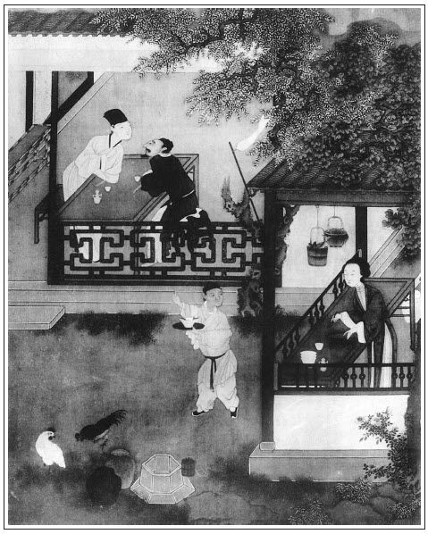

張回此回何九是周旋武大了當的文字。自那日卻和西門慶做一處，是寫西門慶、金蓮開手一番罪案已完，則《金瓶梅》一「金」字的出身來歷已完。不特西門慶又要暫丟開，去娶孟玉樓，即作者亦要暫放此處，更為瓶、梅作傳。今看他下半回，依舊還是金蓮、王婆文字。不知作者自是借鍋下米，做玉樓，做薛嫂，做春梅，人自不知也。
何處做玉樓？觀金瓶罵「負心的賊，如何撇閃了奴，又往那家另續上心甜的了。」此是玉樓的過文，人自不知也。不然，謂是寫金蓮，然則此言卻是寫金蓮什麼事也？要知作者自是以行文為樂，非是雇與西門慶家寫帳簿也。
何處寫薛嫂？其寫王婆遇雨處是也。見得此輩止知愛錢，全不怕天雷，不怕鬼捉，昧著良心在外胡做，風雨晦明都不阻他的惡行。益知媒人之惡，沒一個肯在家安坐不害人者也。則下文薛嫂，已留一影子在王婆身上。不然王婆必寫其遇雨，又是寫王婆子甚麼事也。
何處寫春梅？看其寫金蓮唱曲內，必一云「喚梅香」，再云「梅香」是也。不然金蓮與西門，正是眼釘初去，滿心狂喜之時，何不得於心？乃唱一慘淡之曲，而金蓮自身沾寵之不暇，乃頻喚梅香？且不說丫鬟而必用梅香，總之金、梅二人原是同功一體之人，天生成表裡為惡，一時半霎都分不開者。故武大才死，金、梅早合，而燒夜香，直與樓上燒香「弄一得雙」遙遙相照。誰謂《金瓶梅》有一閒筆浪墨，而凡小唱笑話為漫然無謂也哉？
文有寫他處卻照此處者，為顧盼照應伏線法。文有寫此處卻是寫下文者，為脫卸影喻引入法。此回乃脫卸影喻引入法也。試思十日二十日，方知吾不爾欺。
寫王婆遇雨，又有意在，蓋為玉樓而寫也。何則？武二哥來遲而金蓮嫁，亦惟武二哥來遲，而未娶金蓮先娶玉樓之時日，亦寬綽有餘。不然娶金蓮且不暇，況玉樓哉！夫武二之遲，何故而違「多則兩三月，少則一月」之語哉？則用寫王婆遇雨，照入武二「路上雨水連綿，誤了日期」一語。不然夫幫閒必以遇雨為趣，則應伯爵當寫其日日打傘也。文字用筆之妙，全不使人知道。
寫何九受賄金，為西門拿身份，不似《水滸》之精細防患。蓋《水滸》之為傳甚短，而用何九證見以殺西門。今此書乃尚有後文許多事實也，且為何十留地故耳。
詞曰：
別後誰知珠分玉剖。忘海誓山盟天共久，偶戀著山雞，輒棄鸞儔。從此蕭郎淚暗流，過秦樓幾空回首。縱新人勝舊，也應須一別，灑淚登舟。
──右調《懶畫眉》

卻說西門慶去了。到天大明，張夾接上三更天，則三人已忙了一夜也。王婆拿銀子買了棺材冥器，又買些香燭紙錢之類，歸來就於武大靈前點起一盞隨身燈。鄰舍街坊張夾夾入鄰舍。都來看望，那婦人虛掩著粉臉假哭。眾街坊問道：「大郎得何病患便死了？」那婆娘答道：「因害心疼，不想一日日越重了，看看不能夠好。不幸昨夜三更鼓死了，好是苦也！」又哽哽咽咽假哭起來。眾鄰舍明知道此人死的不明，不好只顧問他。眾人盡勸道：「死是死了，活的自要安穩過。張夾二語千古為人者同聲一哭。娘子省煩惱，天氣暄熱。」張夾映出，為後五月作引。那婦人只得假意兒謝了，眾人各自散去。王婆抬了棺材來，去請仵作團頭何九。但是入殮用的都買了，並家裡一應物件也都買了。就於報恩寺叫了兩個禪和子，晚夕伴靈拜懺。不多時，何九先撥了幾個火家整頓。
且說何九到巳牌時分，慢慢的走來，到紫石街巷口，迎見西門慶。叫道：「老九何往？」何九答道：「小人只去前面殮這賣炊餅的武大郎屍首。」西門慶道：「且停一步說話。」何九跟著西門慶，來到轉角頭一個小酒店裡，坐下在閣兒內。西門慶道：「老九請上坐。」何九道：「小人是何等人，敢對大官人一處坐的！」西門慶道：「老九何故見外？且請坐。」二人讓了一回，坐下。西門慶吩咐酒保：「取瓶好酒來。」酒保一面鋪下菜蔬果品按酒之類，一面燙上酒來。何九心中疑忌，想道：「西門慶自來不曾和我吃酒，今日這杯酒必有蹊蹺。」兩個飲夠多時，只見西門慶向袖子裡摸出一錠雪花銀子，放在面前說道：「老九休嫌輕微，明日另有酬謝。」何九扠手道：「小人無半點效力之處，如何敢受大官人見賜銀兩！若是大官人有使令，小人也不敢辭。」西門慶道：「老九休要見外，請收過了。」何九道：「大官人便說不妨。」西門慶道：「別無甚事。少刻他家自有些辛苦錢。只是如今殮武大的屍首，凡百事周全，一床錦被遮蓋則個。」何九道：「我道何事！這些小事，有甚打緊，如何敢受大官人銀兩？」西門慶道：「你若不受時，便是推卻。」何九自來懼西門慶是個把持官府的人，只得收了銀子。又吃了幾杯酒，西門慶呼酒保來：「記了帳目，明日來我鋪子內支錢。」兩個下樓，一面出了店門。臨行，西門慶道：「老九是必記心，不可洩漏。改日另有補報。」繡旁伏後張本。吩咐罷，一直去了。
何九接了銀子，自忖道：「其中緣故那卻是不須提起的了。只是這銀子，恐怕武二來家有說話，留著倒是個見證。」一面又忖道：「這兩日倒要些銀子攪纏，且落得用了，到其間再做理會便了。」於是一直到武大門首。只見那幾個火家張夾一「只見」。正在門首伺候。王婆也等的心裡火發。張夾又照出王婆。何九一到，便間火家：「這武大是甚病死了？」火家道：「他家說害心疼病死了。」何九入門，揭起簾子進來。張夾至此還照簾子，是何等神理。簾子十四。王婆接著道：「久等多時了，陰陽也來了半日，老九如何這咱才來？」何九道：「便是有些小事絆住了腳，來遲了一步。」只見張夾兩「只見」，俱從何九眼中照入。那婦人穿著一件素淡衣裳，白布䯼髻，從裡面假哭出來。何九道：「娘子省煩惱，大郎已是歸天去了。」那婦人虛掩著淚眼道：「說不得的苦！我夫心疼病症，幾個日子便把命丟了。撇得奴好苦！」這何九一面上上下下看了婆娘的模樣，心裡暗道：「我從來只聽得人說武大娘子，不曾認得他。原來武大郎討得這個老婆在屋裡。西門慶這十兩銀子使著了！」一面走向靈前，看武大屍首。陰陽宣唸經畢，揭起千秋幡，扯開白絹，定睛看時，見武大指甲青，唇口紫，面皮黃，眼皆突出，就知是中惡。旁邊那兩個火家說道：「怎的臉也紫了，口唇上有牙痕，口中出血？」何九道：「休得胡說！兩日天氣十分炎熱，如何不走動些！」一面七手八腳葫蘆提殮了，裝入棺材內，兩下用長命釘釘了。王婆一力攛掇，拿出一弔錢來與何九，打發眾火家去了，張夾又照管眾火家。就問：「幾時出去？」王婆道：「大娘子說只三日便出殯，城外燒化。」何九也便起身。那婦人當夜擺著酒請人，第二日請四個僧唸經。第三日早五更，眾火家都來扛抬棺材，也有幾個鄰舍街坊，弔孝相送。張夾步步映鄰文章捨，為後本。那婦人帶上孝，坐了一乘轎子，一路上口內假哭「養家人」。來到城外化人場上，便教舉火燒化棺材。不一時燒得乾乾淨淨，把骨殖撒在池子裡，原來齋堂管待，一應都是西門慶出錢整頓。
那婦人歸到家中，樓上設個靈牌，上寫「亡夫武大郎之靈」。繡眉凡此都可不必。靈床子前點一盞琉璃燈，裡面貼些經幡錢紙、金銀錠之類。那日卻和西門慶做一處，張夾以下丟開武姓，單講西門。是《金瓶》正傳金蓮出身也。打發王婆家去，二人在樓上任意縱橫取樂，不比先前在王婆家茶房裡，只是偷雞盜狗之歡。如今武大已死，家中無人，兩個肆意停眠整宿。初時西門慶恐鄰舍瞧破，先到王婆那邊坐一回，落後帶著小廝竟從婦人家後門而入。張夾後門九。自此和婦人情沾意密，常時三五夜不歸去，把家中大小丟得七顛八倒，都不歡喜。張夾又照著家內。正是：
色膽如天不自由，情深意密兩綢繆。
貪歡不管生和死，溺愛誰將身體修。
只為恩深情鬱鬱，多因愛闊恨悠悠。
要將吳越冤仇解，地老天荒難歇休。
光陰迅速，日月如梭，西門慶刮剌那婦人將兩月有餘。一日，將近端陽佳節，但見：
綠楊裊裊垂絲碧，海榴點點胭脂赤。微微風動幔，颯颯涼侵扇。處處過端陽，家家共舉觴。張夾自去年十月初十外，至此已半年矣。因西門一向在西裝夢顛倒中，只暗暗敘來，至此一現也。
卻說西門慶自岳廟上回來，到王婆茶坊裡坐下。那婆子連忙點一盞茶來，便問：「大官人往那裡來？怎的不過去看看大娘子？」張夾娘子上忽添一「大」字。妙絕。西門慶道：「今日往廟上走走。大節間記掛著，來看看六姐。」婆子道：「今日他娘潘媽媽在這裡，怕還未去哩。張夾潘媽媽前何不到武大家今忽便來？總之寫盡武大，寫盡人情也。等我過去看看，回大官人。」這婆子走過婦人後門看時，張夾後門十。婦人正陪潘媽媽在房裡吃酒，見婆子來，連忙讓坐。婦人笑道：「乾娘來得正好，請陪俺娘且吃個進門盞兒，到明日養個好娃娃！」婆子笑道：「老身又沒有老伴兒，那裡得養出來？你年小少壯，正好養哩！」婦人道：「常言小花不結老花兒結。」婆子便看著潘媽媽嘈道：「你看你女兒，這等傷我，說我是老花子。到明日還用著我老花子哩！」繡眉王婆妙舌，應是曼倩一流人。說罷，潘媽道：「他從小是這等快嘴，乾娘休要和他一般見識。」王婆道：「你家這姐姐，端的百伶百俐，不枉了好個婦女。到明日，不知什麼有福的人受的他起。」潘媽媽道：「乾娘既是撮合山，全靠乾娘作成則個！」一面安下鍾箸，婦人斟酒在他面前。婆子一連陪了幾杯酒，吃得臉紅紅的，又怕西門慶在那邊等候，連忙丟了個眼色與婦人，告辭歸家。婦人知西門慶來了，因一力攛掇他娘起身去了。張夾寫潘婦人不孝處，可殺。將房中收拾乾淨，燒些異香，從新把娘吃的殘饌撇去，另安排一席齊整酒餚預備。
西門慶從後門過來，張夾後門十一。婦人接著到房中，道個萬福坐下。原來婦人自從武大死後，怎肯帶孝！把武大靈牌丟在一邊，繡眉帶孝不出真心，虛文原是可省。用一張白紙蒙著，羹飯也不揪采。每日只是濃妝艷抹，穿顏色衣服，打扮嬌樣。因見西門慶兩日不來，就罵：「負心的賊，如何撇閃了奴，又往那家另續上心甜的了？把奴冷丟，不來揪采。」張夾不知者止雲寫金蓮惡，知者則雲玉樓已來也。西門慶道：「這兩日有些事，今日往廟上去，替你置了些首飾珠翠衣服之類。」那婦人滿心歡喜。西門慶一面喚過小廝玳安來，氈包內取出，一件件把與婦人。婦人方才拜謝收了。小女迎兒，尋常被婦人打怕的，以此不瞞他，令他拿茶與西門慶吃。一面婦人安放桌兒，陪西門慶喫茶。西門慶道：「你不消費心，我已與了乾娘銀子買東西去了。大節間，正要和你坐一坐。」婦人道：「此是待俺娘的，奴存下這桌整菜兒。等到乾娘買來，且有一回耽擱，咱且吃著。」婦人陪西門慶臉兒相貼，腿兒相壓，並肩一處飲酒。
且說婆子提著個籃兒，走到街上打酒買肉。那時正值五月初旬張夾五月初旬。天氣，大雨時行。只見紅日當天，忽被黑雲遮掩，俄而大雨傾盆。但見：
烏雲生四野，黑霧鎖長空。刷剌剌漫空障日飛來，一點點擊得芭蕉聲碎。狂風相助，侵天老檜掀翻；霹靂交加，泰華嵩喬震動。洗炎驅暑，潤澤田苗，
正是：
江淮河濟添新水，翠竹紅榴洗濯清。
那婆子正打了一瓶酒，買了一籃菜蔬果品之類，在街上遇見這大雨，張夾為武二來遲作證。武二來遲，以便未娶金蓮又先娶玉樓。文字騰挪，固有如此。慌忙躲在人家房簷下，用手帕裹著頭，把衣服都淋濕了。等了一歇，那雨腳慢了些，大步雲飛來家。進入門來，把酒肉放在廚房下，走進房來，看婦人和西門慶飲酒，笑嘻嘻道：「大官人和大娘子好飲酒！你看把婆子身上衣服都淋濕了，到明日就教大官人賠我！」西門慶道：「你看老婆子，就是個賴精。」婆子道：「也不是賴精，大官人少不得賠我一疋大海青。」婦人道：「乾娘，你且飲盞熱酒兒。」那婆子陪著飲了三杯，說道：「老身往廚下烘衣裳去也。」一面走到廚下，把衣服烘乾，那雞鵝嗄飯切割安排停當，用盤碟盛了果品之類，都擺在房中，燙上酒來。西門慶與婦人重斟美酒，交杯疊股而飲。西門慶飲酒中間，看見婦人壁上掛著一面琵琶，便道：「久聞你善彈，今日好夕彈個曲兒我下酒。」婦人笑道：「奴自幼粗學一兩句，不十分好，你卻休要笑恥。」西門慶一面取下琵琶來，摟婦人在懷，看著他放在膝兒上，輕舒玉筍，款弄冰弦，慢慢彈著，低聲唱道：
冠兒不帶懶梳妝，髻挽青絲雲鬢光，金釵斜插在烏雲上。喚梅香，素縞衣裳，開籠箱，穿一套打扮的是西施模樣。出繡房，梅香，你與我捲起簾兒，燒一炷兒夜香。繡眉只一詞，便見金蓮自寓百種嫵媚。張夾看官試想，此曲何故唱來？而唱曲又何必此曲？試想三日何妨，蓋兩喚梅香，而春梅呼吸欲動。
西門慶聽了，歡喜的沒入腳處，一手摟過婦人粉頸來，就親了個嘴，稱誇道：「誰知姐姐有這段兒聰明！就是小人在勾欄三街兩巷相交唱的，也沒你這手好彈唱！」婦人笑道：「蒙官人抬舉，奴今日與你百依百順，張旁直照雪夜琵琶。是必過後休忘了奴家。」西門慶一面捧著他香腮，說道：「我怎肯忘了姐姐！」兩個殢雨尤雲，調笑玩耍。少頃，西門慶又脫下他一隻繡花鞋兒，張旁對下文鬼卦。擎在手內，放一小杯酒在內，吃鞋杯耍子。繡眉何福能消。婦人道：「奴家好小腳兒，你休要笑話。」不一時，二人吃得酒濃，掩閉了房門，解衣上床玩耍。王婆把大門頂著，和迎兒在廚房中坐地。二人在房內顛鸞倒鳳，似水如魚。那婦人枕邊風月，比娼妓尤甚，百般奉承。張旁一語罵盡。西門慶亦施逞槍法打動。兩個女貌郎才，俱在妙齡之際。
寂靜蘭房簟枕涼，佳人才子意何長。
方才枕上澆紅燭，忽又偷來火隔牆。
粉蝶探香花萼顫，蜻蜓戲水往來狂。
情濃樂極猶餘興，珍重檀郎莫相忘。
當日西門慶在婦人家盤桓至晚，欲回家，留了幾兩散碎銀子與婦人做盤纏。婦人再三挽留不住。西門慶帶上眼罩，出門去了。婦人下了簾子，張夾簾子十五。關上大門，又和王婆吃了一回酒，才散。正是：張夾明眼人必知此數語記西門，自此日去，為下回地耳，全非寫此日歡情。
倚門相送劉郎去，煙水桃花去路迷。張夾娶玉樓矣。
文回文禹門云：武大死於金蓮之手，實先死於王婆之口，後死於西門之藥，是三人者，情有分別，罪無差等也。貪財好色，神昏意迷，有一礙手礙眼之人，竟非殺之而不快，是殆亦騎虎之勢，不得不然乎？夫以潘金蓮之狠，西門慶之凶，王婆子之毒，凡有血氣者，讀至此未有不怒髮衝冠，切齒拍案，必須將此三人殺之而後快。何得輕輕放過，而令其驕奢淫佚，放僻邪侈，無所不為，無所不至，快快活活，偷生五、六、七年。惡人富而淫人昌。作者豈真有深仇大恨，橫亙於心胸間，鬱結於肚腹內乎？而故為此一部不平之書，使天下後世之人，鹹有牢騷之色，憤激之情乎？然則看此書者，亦可冷眼觀之矣。